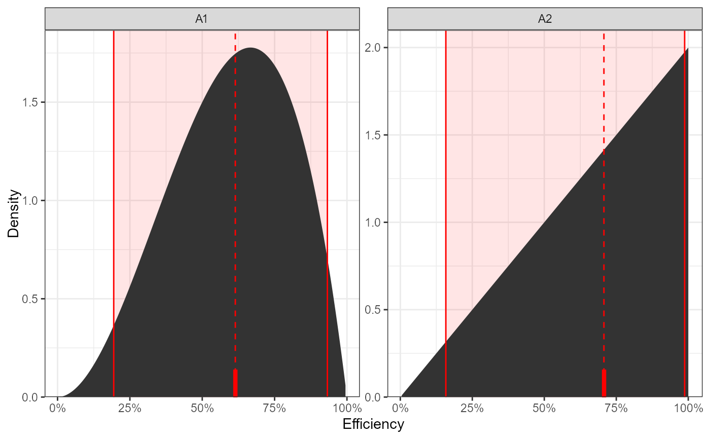
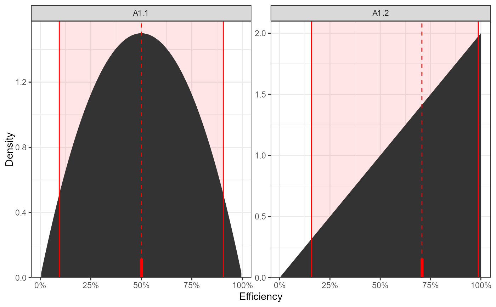
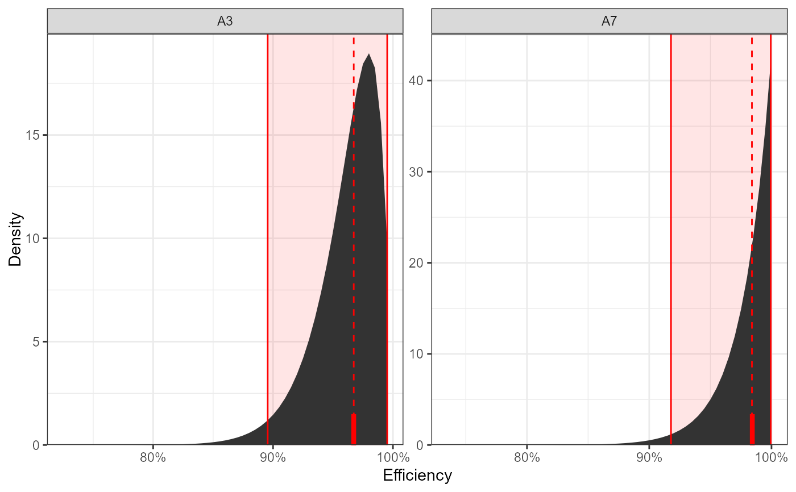

advEfficiency estimates efficiency ranges by fitting a beta distribution
with parameters \(\alpha\) = number of detected tags and \(\beta\) = number of missed
tags. The desired quantiles (argument q) are then calculated from distribution.
Plots are also drawn showing the distribution, the median point (dashed red line) and
the range between the lowest and largest quantile requested (red shaded section).
advEfficiency( x, labels = NULL, q = c(0.025, 0.5, 0.975), force.grid = NULL, paired = TRUE, title = "" )
| x | An efficiency object from actel ( |
|---|---|
| labels | a vector of strings to substitute default plot labels |
| q | The quantile values to be calculated. Defaults to |
| force.grid | A vector of format c(nrow, ncol) that allows the user to define the number of rows and columns to distribute the plots in. |
| paired | Logical: For efficiency derived from residency analyses, should min. and max. estimates for an array be displayed next to each other? |
| title | A title for the plot (feeds into title parameter of ggplot's labs function). |
A data frame with the required quantile values and a plot of the efficiency distributions.
Examples for inclusion in a paper:
If advEfficiency was run on an overall.CJS object (i.e. migration analysis):
"Array efficiency was estimated by fitting a beta distribution (\(\alpha\) = number of tags detected subsequently and at the array, \(\beta\) = number of tags detected subsequently but not at the array) and calculating the median estimated efficiency value using the R package actel [citation]."
If advEfficiency was run on an efficiency object (i.e. residency analysis):
If you are using maximum efficiency estimates:
"Array efficiency was estimated by fitting a beta distribution (\(\alpha\) = number of events recorded by the array, \(\beta\) = number of events known to have been missed by the array). and calculating the median estimated efficiency value using the R package actel [citation]."
If you are using minimum efficiency estimates:
"Array efficiency was estimated by fitting a beta distribution (\(\alpha\) = number of events recorded by the array, \(\beta\) = number of events both known to have been missed and potentially missed by the array). and calculating the median estimated efficiency value using the R package actel [citation]."
If advEfficiency was run on an intra.array.CJS object:
"Intra-array efficiency was estimated by comparing the tags detected at each of the two replicates. For each replicate, a beta distribution was fitted (\(\alpha\) = number of tags detected at both replicates, \(\beta\) = number of tags detected at the opposite replicate but not at the one for which efficiency is being calculated) and the median estimated efficiency value was calculated. The overall efficiency of the array was then estimated as 1-((1-R1)*(1-R2)), where R1 and R2 are the median efficiency estimates for each replicate. These calculations were performed using the R package actel [citation]."
Replace [citation] with the output of citation('actel')
# Example using the output of simpleCJS. x <- matrix( c(TRUE, TRUE, TRUE, TRUE, TRUE, TRUE, FALSE, TRUE, TRUE, FALSE, TRUE, TRUE, FALSE, FALSE, FALSE, TRUE, TRUE, FALSE, TRUE, TRUE, TRUE, TRUE, TRUE, FALSE, FALSE), ncol = 5, byrow = TRUE) colnames(x) <- c("Release", "A1", "A2", "A3", "A4") cjs.results <- simpleCJS(x) # These cjs results can be used in advEfficiency advEfficiency(cjs.results)#>#> 2.5% 50% 97.5% #> Release 1.0000000 1.0000000 1.0000000 #> A1 0.1941204 0.6142724 0.9324140 #> A2 0.1581139 0.7071068 0.9874209 #> A3 1.0000000 1.0000000 1.0000000# Example using the output of dualArrayCJS. x <- matrix( c( TRUE, TRUE, TRUE, FALSE, TRUE, TRUE, FALSE, TRUE, FALSE, TRUE), ncol = 2, byrow = TRUE) colnames(x) <- c("A1.1", "A1.2") cjs.results <- dualArrayCJS(x) # These cjs results can be used in advEfficiency advEfficiency(cjs.results)#>#> 2.5% 50% 97.5% #> A1.1 0.09429932 0.5000000 0.9057007 #> A1.2 0.15811388 0.7071068 0.9874209 #> Combined 0.23750317 0.8535534 0.9988138# advEfficiency can also be run with the output from the main analyses. # the example.results dataset is the output of a migration analysis advEfficiency(example.results$overall.CJS)#>#> 2.5% 50% 97.5% #> A1 1.0000000 1.0000000 1.0000000 #> A2 1.0000000 1.0000000 1.0000000 #> A3 0.8955251 0.9673092 0.9952150 #> A4 1.0000000 1.0000000 1.0000000 #> A5 1.0000000 1.0000000 1.0000000 #> A6 1.0000000 1.0000000 1.0000000 #> A7 0.9177889 0.9840095 0.9994114 #> A8 1.0000000 1.0000000 1.0000000